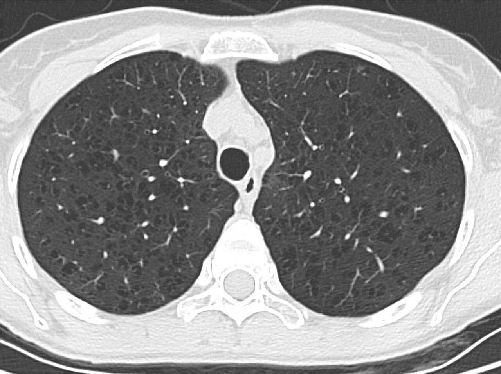

Ficha del catálogo
EPOC y enfisema pulmonar
- Sistema
- Respiratorio
- Modalidad
- TC
- Región
- Tórax
- Dificultad
- Intermedio
La enfermedad pulmonar obstructiva crónica se caracteriza por limitación al flujo aéreo poco reversible, con dos componentes: Enfisema, que destruye el parénquima, y bronquitis crónica, que engrosa las paredes bronquiales. El tabaquismo es la causa principal. La tomografía permite cuantificar y tipificar el enfisema, información útil para valorar tratamientos como la reducción de volumen.
Técnica
Tomografía de tórax sin contraste con cortes finos y reconstrucción de alta resolución, adquirida en inspiración máxima y complementada con espiración para valorar atrapamiento aéreo.
Qué observar
- Áreas de baja atenuación sin pared definida distribuidas en los lóbulos superiores
- Destrucción y desplazamiento de los vasos pulmonares alrededor de las zonas enfisematosas
- Bullas subpleurales y engrosamiento de las paredes bronquiales
- Hiperinsuflación con aplanamiento de los hemidiafragmas en la radiografía
- Aumento del espacio aéreo retroesternal en la proyección lateral
- Atrapamiento aéreo en la serie espiratoria con mosaico de atenuación
Hallazgos
Pulmones hiperinsuflados con áreas de destrucción parenquimatosa de predominio en campos superiores, vasos adelgazados y paredes bronquiales engrosadas.
Perlas
El enfisema centrolobulillar predomina en lóbulos superiores y se asocia al tabaco, mientras que el panlobulillar afecta bases y hace pensar en déficit de alfa-1-antitripsina. Esa distribución orienta la causa antes que cualquier análisis.
Diagnóstico diferencial
- Bronquiolitis obliterante
- Patrón en mosaico con atrapamiento marcado y sin destrucción parenquimatosa.
- Quistes pulmonares de otras enfermedades
- Tienen pared definida, a diferencia del enfisema.
- Asma
- Obstrucción reversible con parénquima conservado.
Simuladores
- Artefacto de baja atenuación por movimiento
- Zonas de atrapamiento fisiológico en bases
- Quistes de origen linfoide
Por modalidad
- RX
- Muestra hiperinsuflación y bullas grandes
- TC
- Cuantifica y tipifica el enfisema con precisión
Protocolo
Adquisición volumétrica en inspiración máxima con reconstrucción de alta resolución, más serie espiratoria para atrapamiento aéreo.
Clasificación
El enfisema se tipifica morfológicamente en centrolobulillar, panlobulillar y paraseptal según su distribución dentro del lobulillo pulmonar secundario.
Errores frecuentes
- No realizar serie espiratoria y perder el atrapamiento aéreo
- Confundir bullas con neumotórax en la radiografía simple
- Ignorar nódulos pulmonares en un paciente fumador con enfisema

epoc enfisema tabaquismo atrapamiento aereo bullas hiperinsuflacion alta resolucion